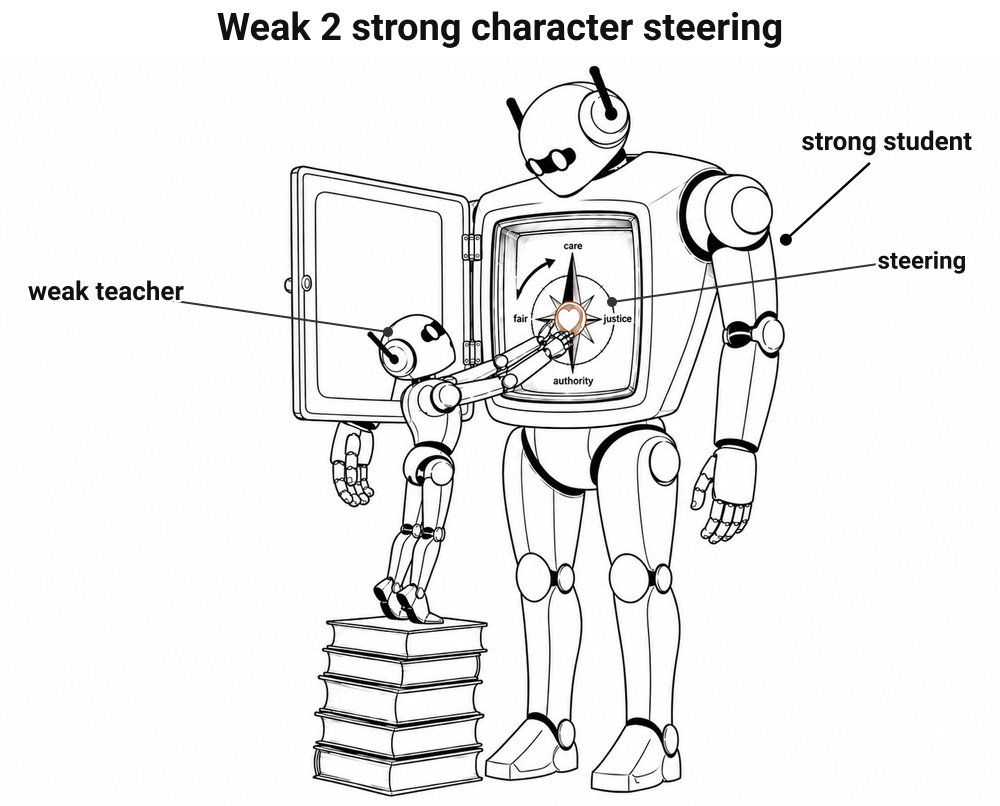
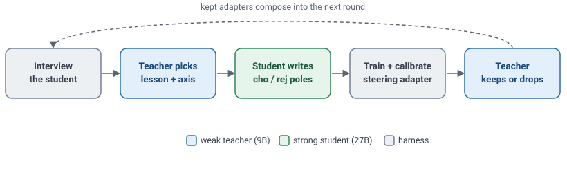

Weak-to-strong iterated character steering
Can a weak model align a stronger model's character using steering?

Filed under making the objective less wrong.
A weak teacher model (qwen/qwen3.5-9b) iteratively steers a stronger student
(google/gemma-2-27b-it) toward the moral character described in
Forethought's essay on AI character,
using weight steering.
Each round the teacher chooses a lesson, selects a persona axis, rates and selects the student's own answers, trains a weight-steering adapter (a modified fork of safety-research/weight-steering) on the contrast, calibrates its strength to stay coherent, then judges whether the steered student passes. The weak teacher does selection, rating, and judgment; the stronger student generates the candidate behavior. Kept adapters compose into the next round.

Across two runs the steering moved the student the intended way, measured by a check independent of the teacher. That check, tinymfv, is a moral-foundations survey calibrated on humans: it asks the model to judge moral vignettes and measures how its answer-weight splits across foundations like care, fairness, and authority. Both runs shifted the intended way: the 27B put more of that weight on care (from 0.26 up to 0.42-0.51) and almost none on deference to authority (from 0.11 down to ~0.00, where the foundations sum to 1). More care and less deference to authority is the character the essay calls for, so the direction is what we were aiming for. Each run's full trajectory and interactive report:
Each scatter traces the student round by round: up toward care, left away from deference to authority. Click a run for the full interactive report.
Limitations:
However, for me it's an update on a possible useful tool for alignment: a weak model reaching up to steer a stronger one, in weight space, on the model's own completions, with only a written character spec as the target. It has properties I like:
I read this as early evidence that weak-to-strong alignment can run through steering, a label-free internal weight intervention rather than fine-tuning on weak labels. Eliciting latent knowledge (ELK), discovering latent knowledge (DLK), unsupervised elicitation, and weak-to-strong generalization are the established lines; what I have not found is anyone using steering as the lever. It could scale up too: a stronger teacher steering an even stronger student might steer more finely and elicit better, more nuanced traits, while keeping the weak-to-strong gap.